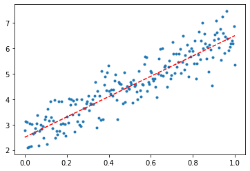

#
#!conda install -c conda-forge python-graphviz -y5주차-4월 04일
빅데이터분석특강
- toc:false
- branch: master
- badges: true
- comments: true
- author: 심재인
강의영상
youtube: https://youtube.com/playlist?list=PLQqh36zP38-wVWUAZ5xT35INvWbNOXpBx
imports
import tensorflow as tf
import numpy as np
import matplotlib.pyplot as plt import tensorflow.experimental.numpy as tnp tnp.experimental_enable_numpy_behavior() 최적화의 문제
- \(loss=(\frac{1}{2}\beta-1)^2\)
- 기존에 했던 방법은 수식을 알고 있어야 한다는 단점이 있음
tf.keras.optimizers를 이용한 최적화방법
방법1: opt.apply_gradients()를 이용
alpha= 0.01/6beta= tf.Variable(-10.0) 2022-04-25 14:39:32.750112: I tensorflow/stream_executor/cuda/cuda_gpu_executor.cc:939] successful NUMA node read from SysFS had negative value (-1), but there must be at least one NUMA node, so returning NUMA node zeroopt = tf.keras.optimizers.SGD(alpha)- iter1
with tf.GradientTape() as tape:
tape.watch(beta)
loss=(beta/2-1)**2
slope = tape.gradient(loss,beta)opt.apply_gradients([(slope,beta)]) # beta.assign_sub(slope * alpha)
beta<tf.Variable 'Variable:0' shape=() dtype=float32, numpy=-9.99>- iter2
with tf.GradientTape() as tape:
tape.watch(beta)
loss=(beta/2-1)**2
slope = tape.gradient(loss,beta)
opt.apply_gradients([(slope,beta)]) # beta.assign_sub(slope * alpha)
beta<tf.Variable 'Variable:0' shape=() dtype=float32, numpy=-9.980008>- for문으로 정리
alpha= 0.01/6
beta= tf.Variable(-10.0)
opt = tf.keras.optimizers.SGD(alpha)for epoc in range(10000):
with tf.GradientTape() as tape:
tape.watch(beta)
loss=(beta/2-1)**2
slope = tape.gradient(loss,beta)
opt.apply_gradients([(slope,beta)]) # beta.assign_sub(slope * alpha)
betabeta<tf.Variable 'Variable:0' shape=() dtype=float32, numpy=1.9971251>- opt.apply_gradients()의 입력은 pair 의 list
방법2: opt.minimize()
alpha= 0.01/6
beta= tf.Variable(-10.0)
opt = tf.keras.optimizers.SGD(alpha)loss_fn = lambda: (beta/2-1)**2lambda x: x**2<=>lambda(x)=x^2lambda x,y: x+y<=>lambda(x,y)=x+ylambda: y<=>lambda()=y, 입력이 없으며 출력은 항상 y인 함수
loss_fn() # 입력은 없고 출력은 뭔가 계산되는 함수 <tf.Tensor: shape=(), dtype=float32, numpy=36.0>- iter 1
opt.minimize(loss_fn, beta)<tf.Variable 'UnreadVariable' shape=() dtype=int64, numpy=1>beta<tf.Variable 'Variable:0' shape=() dtype=float32, numpy=-9.99>- iter2
opt.minimize(loss_fn, beta)
beta<tf.Variable 'Variable:0' shape=() dtype=float32, numpy=-9.980008>- for문으로 정리하면
alpha= 0.01/6
beta= tf.Variable(-10.0)
opt = tf.keras.optimizers.SGD(alpha)
loss_fn = lambda: (beta/2-1)**2
for epoc in range(10000):
opt.minimize(loss_fn, beta)
beta<tf.Variable 'Variable:0' shape=() dtype=float32, numpy=1.9971251>회귀분석 문제
- \({\bf y} \approx 2.5 + 4.0 {\bf x}\)
tnp.random.seed(43052)
N = 200
x = tnp.linspace(0,1,N)
epsilon = tnp.random.randn(N)*0.5
y = 2.5+4*x + epsilon
y_true = 2.5+4*xplt.plot(x,y,'.')
plt.plot(x,y_true,'r--')
이론적 풀이
풀이1: 스칼라버전
- 포인트 - \(S_{xx}=\), \(S_{xy}=\) - \(\hat{\beta}_0=\), \(\hat{\beta}_1=\)
- 풀이
Sxx = sum((x-x.mean())**2)
Sxy = sum((x-x.mean())*(y-y.mean()))beta1_hat = Sxy/Sxx
beta1_hat<tf.Tensor: shape=(), dtype=float64, numpy=3.933034516733168>beta0_hat = y.mean() - x.mean()*beta1_hat
beta0_hat<tf.Tensor: shape=(), dtype=float64, numpy=2.583667211565867>풀이2: 벡터버전
- 포인트 - \(\hat{\beta}=(X'X)^{-1}X'y\)
- 풀이
y=y.reshape(N,1)
X=tf.stack([tf.ones(N,dtype=tf.float64),x],axis=1)
y.shape,X.shape(TensorShape([200, 1]), TensorShape([200, 2]))tf.linalg.inv(X.T @ X ) @ X.T @ y <tf.Tensor: shape=(2, 1), dtype=float64, numpy=
array([[2.58366721],
[3.93303452]])>풀이3: 벡터버전, 손실함수의 도함수이용
- 포인트 - \(loss'(\beta)=-2X'y +2X'X\beta\) - \(\beta_{new} = \beta_{old} - \alpha \times loss'(\beta_{old})\)
- 풀이
y=y.reshape(N,1)
y.shape,X.shape(TensorShape([200, 1]), TensorShape([200, 2]))beta_hat = tnp.array([-5,10]).reshape(2,1)
beta_hat<tf.Tensor: shape=(2, 1), dtype=int64, numpy=
array([[-5],
[10]])>slope = (-2*X.T @ y + 2*X.T @ X @ beta_hat) / N
slope<tf.Tensor: shape=(2, 1), dtype=float64, numpy=
array([[-9.10036894],
[-3.52886113]])>alpha= 0.1 step = slope*alpha
step<tf.Tensor: shape=(2, 1), dtype=float64, numpy=
array([[-0.91003689],
[-0.35288611]])>for epoc in range(1000):
slope = (-2*X.T @ y + 2*X.T @ X @ beta_hat)/N
beta_hat = beta_hat - alpha* slopebeta_hat<tf.Tensor: shape=(2, 1), dtype=float64, numpy=
array([[2.58366061],
[3.93304684]])>GradientTape를 이용
풀이1: 벡터버전
- 포인트
## 포인트코드1: 그레디언트 테입
with tf.GradientTape() as tape:
loss =
## 포인트코드2: 미분
slope = tape.gradient(loss,beta_hat)
## 포인트코드3: update
beta_hat.assign_sub(slope*alph) - 풀이
y=y.reshape(N,1)
y.shape,X.shape(TensorShape([200, 1]), TensorShape([200, 2]))beta_hat = tf.Variable(tnp.array([-5.0,10.0]).reshape(2,1))
beta_hat<tf.Variable 'Variable:0' shape=(2, 1) dtype=float64, numpy=
array([[-5.],
[10.]])>alpha=0.1for epoc in range(1000):
with tf.GradientTape() as tape:
yhat= X@beta_hat
loss= (y-yhat).T @ (y-yhat) / N
slope = tape.gradient(loss,beta_hat)
beta_hat.assign_sub(alpha*slope) beta_hat<tf.Variable 'Variable:0' shape=(2, 1) dtype=float64, numpy=
array([[2.58366061],
[3.93304684]])>풀이2: 스칼라버전
- 포인트
## 포인트코드: 미분
slope0,slope1 = tape.gradient(loss,[beta0_hat,beta1_hat])- 풀이
y=y.reshape(-1)
y.shape,x.shape(TensorShape([200]), TensorShape([200]))beta0_hat = tf.Variable(-5.0)
beta1_hat = tf.Variable(10.0)alpha=0.1for epoc in range(1000):
with tf.GradientTape() as tape:
yhat= beta0_hat + x*beta1_hat
loss= tf.reduce_sum((y-yhat)**2)/N #loss= sum((y-yhat)**2)/N
slope0,slope1 = tape.gradient(loss,[beta0_hat,beta1_hat])
beta0_hat.assign_sub(alpha*slope0)
beta1_hat.assign_sub(alpha*slope1)beta0_hat,beta1_hat(<tf.Variable 'Variable:0' shape=() dtype=float32, numpy=2.58366>,
<tf.Variable 'Variable:0' shape=() dtype=float32, numpy=3.933048>)GradientTape + opt.apply_gradients
풀이1: 벡터버전
- 포인트
## 포인트코드: 업데이트
opt.apply_gradients([(slope,beta_hat)]) ## pair의 list가 입력 - 풀이
y=y.reshape(N,1)
y.shape,X.shape(TensorShape([200, 1]), TensorShape([200, 2]))beta_hat = tf.Variable(tnp.array([-5.0,10.0]).reshape(2,1))
beta_hat<tf.Variable 'Variable:0' shape=(2, 1) dtype=float64, numpy=
array([[-5.],
[10.]])>alpha=0.1
opt = tf.optimizers.SGD(alpha)for epoc in range(1000):
with tf.GradientTape() as tape:
yhat= X@beta_hat
loss= (y-yhat).T @ (y-yhat) / N
slope = tape.gradient(loss,beta_hat)
opt.apply_gradients([(slope,beta_hat)])
#beta_hat.assign_sub(alpha*slope) beta_hat<tf.Variable 'Variable:0' shape=(2, 1) dtype=float64, numpy=
array([[2.58366061],
[3.93304684]])>풀이2: 스칼라버전
- 포인트
## 포인트코드: 업데이트
opt.apply_gradients([(slope0,beta0_hat),(slope1,beta1_hat)]) ## pair의 list가 입력 - 풀이
y=y.reshape(-1)
y.shape,x.shape(TensorShape([200]), TensorShape([200]))beta0_hat = tf.Variable(-5.0)
beta1_hat = tf.Variable(10.0)alpha=0.1
opt = tf.optimizers.SGD(alpha)for epoc in range(1000):
with tf.GradientTape() as tape:
yhat= beta0_hat + beta1_hat*x #X@beta_hat
loss= tf.reduce_sum((y-yhat)**2) / N
slope0,slope1 = tape.gradient(loss,[beta0_hat,beta1_hat])
opt.apply_gradients([(slope0,beta0_hat),(slope1,beta1_hat)])beta0_hat,beta1_hat(<tf.Variable 'Variable:0' shape=() dtype=float32, numpy=2.58366>,
<tf.Variable 'Variable:0' shape=() dtype=float32, numpy=3.933048>)opt.minimize
풀이1: 벡터버전, 사용자정의 손실함수 with lambda
- 풀이
y=y.reshape(N,1)
y.shape,X.shape(TensorShape([200, 1]), TensorShape([200, 2]))beta_hat = tf.Variable(tnp.array([-5.0,10.0]).reshape(2,1))
beta_hat<tf.Variable 'Variable:0' shape=(2, 1) dtype=float64, numpy=
array([[-5.],
[10.]])>loss_fn = lambda: (y-X@beta_hat).T @ (y-X@beta_hat) / N alpha=0.1
opt = tf.optimizers.SGD(alpha)for epoc in range(1000):
opt.minimize(loss_fn,beta_hat)beta_hat<tf.Variable 'Variable:0' shape=(2, 1) dtype=float64, numpy=
array([[2.58366061],
[3.93304684]])>풀이2: 스칼라버전, 사용자정의 손실함수 with lambda
- 포인트
## 포인트코드: 미분 & 업데이트 = minimize
opt.minimize(loss_fn,[beta0_hat,beta1_hat])- 풀이
y=y.reshape(-1)
y.shape,x.shape(TensorShape([200]), TensorShape([200]))beta0_hat = tf.Variable(-5.0)
beta1_hat = tf.Variable(10.0) loss_fn = lambda: tf.reduce_sum((y-beta0_hat-beta1_hat*x )**2) / N alpha=0.1
opt = tf.optimizers.SGD(alpha)for epoc in range(1000):
opt.minimize(loss_fn,[beta0_hat,beta1_hat])beta0_hat,beta1_hat(<tf.Variable 'Variable:0' shape=() dtype=float32, numpy=2.58366>,
<tf.Variable 'Variable:0' shape=() dtype=float32, numpy=3.933048>)풀이3: 벡터버전, 사용자정의 (짧은) 손실함수
- 포인트
## 포인트코드: 손실함수정의
def loss_fn():
return ??- 풀이
y=y.reshape(N,1)
y.shape,X.shape(TensorShape([200, 1]), TensorShape([200, 2]))beta_hat = tf.Variable(tnp.array([-5.0,10.0]).reshape(2,1))
beta_hat<tf.Variable 'Variable:0' shape=(2, 1) dtype=float64, numpy=
array([[-5.],
[10.]])>def loss_fn():
return (y-X@beta_hat).T @ (y-X@beta_hat) / N alpha=0.1
opt = tf.optimizers.SGD(alpha)for epoc in range(1000):
opt.minimize(loss_fn,beta_hat)beta_hat<tf.Variable 'Variable:0' shape=(2, 1) dtype=float64, numpy=
array([[2.58366061],
[3.93304684]])>풀이4: 벡터버전, 사용자정의 (긴) 손실함수
- 포인트
## 포인트코드: 손실함수정의
def loss_fn():
??
??
return ??- 풀이
y=y.reshape(N,1)
y.shape,X.shape(TensorShape([200, 1]), TensorShape([200, 2]))beta_hat = tf.Variable(tnp.array([-5.0,10.0]).reshape(2,1))
beta_hat<tf.Variable 'Variable:0' shape=(2, 1) dtype=float64, numpy=
array([[-5.],
[10.]])>def loss_fn():
yhat= X@beta_hat # 컴퓨터한테 전달할 수식1
loss = (y-yhat).T @ (y-yhat) / N # 컴퓨터한테 전달할 수식 2
return loss # tape.gradient(loss,beta_hat) 에서의 미분당하는애 alpha=0.1
opt = tf.optimizers.SGD(alpha)for epoc in range(1000):
opt.minimize(loss_fn,beta_hat)beta_hat<tf.Variable 'Variable:0' shape=(2, 1) dtype=float64, numpy=
array([[2.58366061],
[3.93304684]])>풀이5: 벡터버전, 사용자정의 손실함수 <- tf.losses.MSE
- 포인트
## 포인트코드: 미리구현되어있는 손실함수 이용
tf.losses.MSE(y,yhat)- 풀이
y=y.reshape(N,1)
y.shape,X.shape(TensorShape([200, 1]), TensorShape([200, 2]))beta_hat = tf.Variable(tnp.array([-5.0,10.0]).reshape(2,1))
beta_hat<tf.Variable 'Variable:0' shape=(2, 1) dtype=float64, numpy=
array([[-5.],
[10.]])>def loss_fn():
yhat= X@beta_hat # 컴퓨터한테 전달할 수식1
loss = tf.keras.losses.MSE(y.reshape(-1),yhat.reshape(-1)) # 컴퓨터한테 전달할 수식 2
return loss # tape.gradient(loss,beta_hat) 에서의 미분당하는애 alpha=0.1
opt = tf.optimizers.SGD(alpha)for epoc in range(1000):
opt.minimize(loss_fn,beta_hat)beta_hat<tf.Variable 'Variable:0' shape=(2, 1) dtype=float64, numpy=
array([[2.58366061],
[3.93304684]])>풀이6: 벡터버전, 사용자정의 손실함수 <- tf.losses.MeaSquaredError
- 포인트
## 포인트코드: 클래스로부터 손실함수 오브젝트 생성 (함수를 찍어내는 클래스)
mse_fn = tf.losses.MeanSquaredError()
mse_fn(y,yhat)- 풀이
mseloss_fn = tf.losses.MeanSquaredError()mseloss_fn=tf.keras.losses.MSE라고 보면된다.
y=y.reshape(N,1)
y.shape,X.shape(TensorShape([200, 1]), TensorShape([200, 2]))beta_hat = tf.Variable(tnp.array([-5.0,10.0]).reshape(2,1))
beta_hat<tf.Variable 'Variable:0' shape=(2, 1) dtype=float64, numpy=
array([[-5.],
[10.]])>def loss_fn():
yhat= X@beta_hat # 컴퓨터한테 전달할 수식1
loss = mseloss_fn(y.reshape(-1),yhat.reshape(-1)) # 컴퓨터한테 전달할 수식 2
return loss # tape.gradient(loss,beta_hat) 에서의 미분당하는애 alpha=0.1
opt = tf.optimizers.SGD(alpha)for epoc in range(1000):
opt.minimize(loss_fn,beta_hat)beta_hat<tf.Variable 'Variable:0' shape=(2, 1) dtype=float64, numpy=
array([[2.58366061],
[3.93304684]])>tf.keras.Sequential
- \(\hat{y}_i=\hat{\beta}_0+\hat{\beta}_1x_i\) 의 서로다른 표현
import graphviz
def gv(s): return graphviz.Source('digraph G{ rankdir="LR"'+s + '; }')gv('''
"1" -> "beta0_hat + x*beta1_hat, bias=False"[label="* beta0_hat"]
"x" -> "beta0_hat + x*beta1_hat, bias=False"[label="* beta1_hat"]
"beta0_hat + x*beta1_hat, bias=False" -> "yhat"[label="indentity"]
''')ExecutableNotFound: failed to execute PosixPath('dot'), make sure the Graphviz executables are on your systems' PATH<graphviz.sources.Source at 0x7fe34059cb50>gv('''
"x" -> "x*beta1_hat, bias=True"[label="*beta1_hat"] ;
"x*beta1_hat, bias=True" -> "yhat"[label="indentity"] ''')ExecutableNotFound: failed to execute PosixPath('dot'), make sure the Graphviz executables are on your systems' PATH<graphviz.sources.Source at 0x7fe32c6f5030>gv('''
"X=[1 x]" -> "X@beta_hat, bias=False"[label="@beta_hat"] ;
"X@beta_hat, bias=False" -> "yhat"[label="indentity"] ''')ExecutableNotFound: failed to execute PosixPath('dot'), make sure the Graphviz executables are on your systems' PATH<graphviz.sources.Source at 0x7fe32c59f520>풀이1: 벡터버전, 사용자정의 손실함수
- 포인트
## 포인트코드1: 네트워크 생성
net = tf.keras.Sequential()
## 포인트코드2: 네트워크의 아키텍처 설계
net.add(tf.keras.layers.Dense(1,input_shape=(2,),use_bias=False))
## 포인트코드3: 네트워크 컴파일 = 아키텍처 + 손실함수 + 옵티마이저
net.compile(opt,loss=loss_fn2)
## 포인트코드4: 미분 & update
net.fit(X,y,epochs=1000,verbose=0,batch_size=N) - 풀이
net = tf.keras.Sequential() net.add(tf.keras.layers.Dense(units=1,input_shape=(2,),use_bias=False)) ## yhat을 구하는 방법정의 = 아키텍처가 설계 - units는 layer의 출력의 차원, 이 경우는 yhat의 차원, yhat은 (200,1) 이므로 1임.
- input_shape는 layer의 입력의 차원, 이 경우는 X의 차원, X는 (200,2) 이므로 2임.
def loss_fn2(y,yhat):
return (y-yhat).T @ (y-yhat) / N alpha=0.1
opt =tf.optimizers.SGD(alpha)[np.array([[-5.0],[10.0]],dtype=np.float32)][array([[-5.],
[10.]], dtype=float32)]net.set_weights([np.array([[-5.0],[10.0]],dtype=np.float32)])net.weights[<tf.Variable 'dense/kernel:0' shape=(2, 1) dtype=float32, numpy=
array([[-5.],
[10.]], dtype=float32)>]net.compile(opt,loss=tf.losses.MSE)
# 아키텍처 + 손실함수 + 옵티마이저 => 네트워크에 다 합치자 => 네트워크를 컴파일한다. net.fit(X,y,epochs=1000,batch_size=N,verbose=0) # 미분 + 파라메터업데이트 = net.fit <keras.callbacks.History at 0x7fe2c4621ab0>net.weights[<tf.Variable 'dense/kernel:0' shape=(2, 1) dtype=float32, numpy=
array([[2.58366 ],
[3.933048]], dtype=float32)>]